The match involving the five players is known as the Trial.
"Death is not an escape."
Survivor
Each Trial begins with four Survivors. Your objective is to repair five of the seven Generators located throughout the map to power the Exit Gates which the Survivors must open manually. After which, the Survivors can escape the Trial.
Survival is a team effort. While repairing Generators is essential, rescuing Hooked Survivors, Healing allies, and supporting one another are just as important. Four odds are better than one!
Killer
As the Killer, your goal is to prevent the Survivors from escaping. Find, Injure, and Down Survivors before carrying them to Hooks. A Survivor who is put on the Hook a third time is killed. Three strikes and they're out!
A Killer's performance is measured by the number of Survivors eliminated during a Trial:
One kill is a loss. Two kills is a draw. Three kills is a victory. Four kills is a complete victory (4K).
"There won't be nothing to fear soon. Till then, fear me."
Killer Objective
Each Trial begins with one Killer against four Survivors. There are seven Generators scattered around the map, and the Survivors must repair five of them to restore power to the Exit Gates. Your objective
is to prevent the Survivors from repairing the five Generators
and escaping through the Exit Gates.
Find Survivors, Injure them, and then Down them using your weapon or Killer power. Each Killer has a power unique only to them, so use their individual kit to assist yourself in chasing the Survivors.
Scattered throughout each Trial, Hooks are used by the Killer to kill Survivors. Hooks are central to the Killer's objective; they are the Killer's primary means of eliminating Survivors. Survivors placed on Hooks must rely on their teammates for rescue, as getting Hooked a third time results in elimination from the Trial.
If all five Generators are repaired, power has been restored to the two Exit Gates Switches, which Survivors must fully open to escape the Trial. The Exit Gate Switches are illuminated to you in white. Stop the Survivors from opening the Exit Gates by attacking, Hooking, and killing them.
Should the Survivors open either one or both Exit Gates, the Endgame Collapse begins. A four minute timer will appear at the top of the screen. Survivors immediately die if they do not escape through the Exit Gates before the timer runs out.
Tracking Survivors
With the exception of The Good Guy and The Dark Lord who have access to third-person POV, Killers play in the first person. Survivors play in third person.
Pay extra attention to the environment while searching for Survivors because of your lack of third-person vision.
Different clues can reveal where they went.
Scratch Marks: Running Survivors leave red marks on
walls, floors, and nearby objects. Survivors can also walk or crouch; these two movements do not leave Scratch Marks behind.
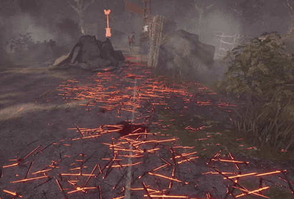
Running
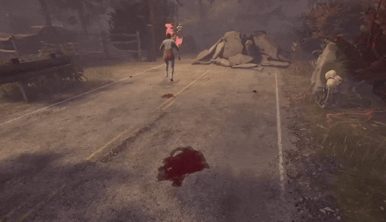
Walking
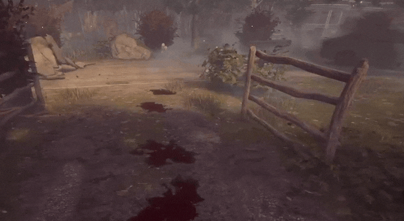
Crouching
Pools of Blood: Injured Survivors leave blood on
the ground.
Grunts of Pain: Injured Survivors make
pained sounds, like crying and gasping, that can reveal their location.
Crows: Various crows rest on objects around the map, and fly away when a Survivor moves close
to them. Seeing a crow fly away helps track a Survivor's last known location. However, be aware that you, the Killer, can also trigger Crows to fly away if you are nearby; Survivors can use this to track you as well.
Loud Noise Notification: Survivors who mess up while repairing Generators or Healing,
rushing in and out of Lockers or across Pallets and Windows alert you with a loud audio and visual
cue of their location.
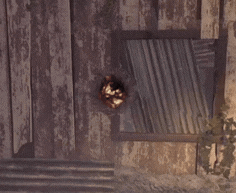
Chasing and Attacking
Once you find a Survivor, chase them and use your weapon or Killer
Power. A Healthy Survivor becomes Injured
after being hit once. Injuring a Survivor again Downs them.
Pallets and Windows are key resources for Survivors, allowing them to extend chases and evade the Killer. Pallets are wooden objects scattered around the map which the Survivors can use to stun the Killer; the Killer will only be stunned if the Pallet is directly dropped on them. Windows can be used by Survivors to evade the Killer as well. While Killers can destroy dropped Pallets and vault Windows, they vault more slowly than Survivors.
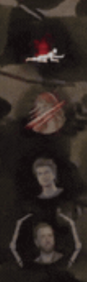
Keep an eye on the HUD (Heads-Up Display) at the left of the screen. There you can see whether a Survivor is Healthy, Injured, Downed, Hooked, or Dead. Do not spend too long chasing one Survivor. Leaving a difficult chase
may allow you to protect important Generators or find an easier target.
Generator Defense
Regularly patrol unfinished Generators and listen for repair sounds.
Generators with moving pistons have been worked on by Survivors. Generators have a large spotlight above them; if the spotlight is on, the Generator is complete. Both the Killer and the Survivors are notified when a Generator is fully repaired.
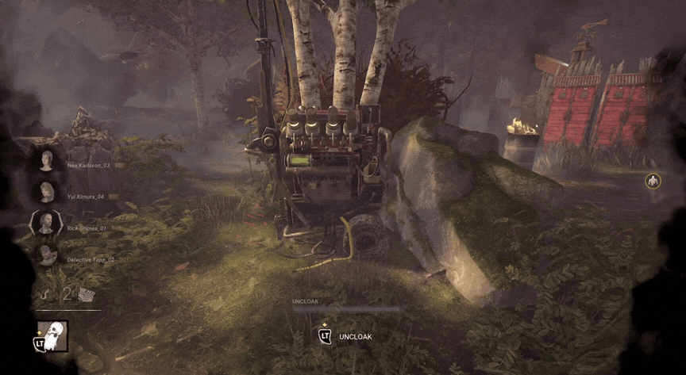
A Half-Repaired Generator
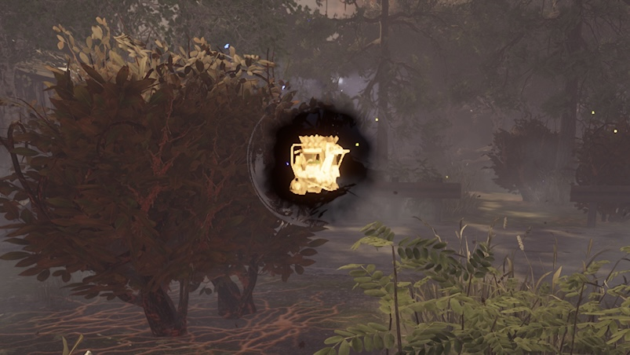
Completed Generator Notification
Killers can kick an unfinished Generator to remove some progress and
begin Generator Regression. Regression slowly removes
progress until a Survivor begins repairing it again.
Each Generator can be damaged up to eight times. Once the Generator has been damaged eight times, the Killer is barred from damaging it ever again.
Grabbing Survivors
A Killer may sometimes grab a Survivor instead of attacking them.
This can happen while a Survivor is:
Repairing a Generator.
Entering or leaving a Locker; it also applies if the Killer opens a Locker while a Survivor is inside.
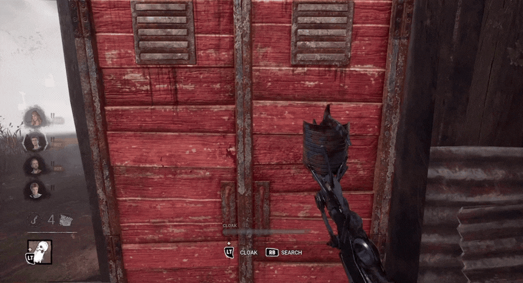
If an Injured Survivor vaults a Window or Pallet. (More information on Vaulting in the Survivors section.)
If the grab is successful, the Survivor is
immediately put onto the Killer's shoulder and can be Hooked.
Hooking Survivors
After downing a Survivor, pick them up and carry them to a nearby Hook.
The Survivor will attempt to Wiggle free while being carried. You have 16 seconds to carry a Survivor to a Hook, otherwise they will Wiggle off your shoulder; you will need to down them all over again.
In addition to the Hooks scattered around the map, there is a special location which spawns in every single Trial known as the Basement. The Basement has only one combined entrance and exit, which is a staircase leading underground where four indestructible Hooks can be found. If a Survivor dies on a Hook in the Basement, the Hook will remain as is, unlike other Hooks which are temporarily unavailable after a Survivor dies.
The Stairwell leading to the BasementThe Basement Hooks
Once Hooked, the Survivor has a 140 second death timer split into two stages:
First Hook State: The Survivor hangs on the Hook and waits for a teammate
to rescue them (70 seconds). If the other Survivors fail to rescue them before the 70 second timer elapses, they enter into the Second Hook State.
Second Hook State: If either left on Hook past the 70 seconds of the First Hook State, or if Hooked again, the Survivor must complete Skill
Checks while requiring a teammate to rescue them (70 seconds). Should the Hooked Survivor miss a Skill-Check, they lose precious seconds from their 70 second timer.
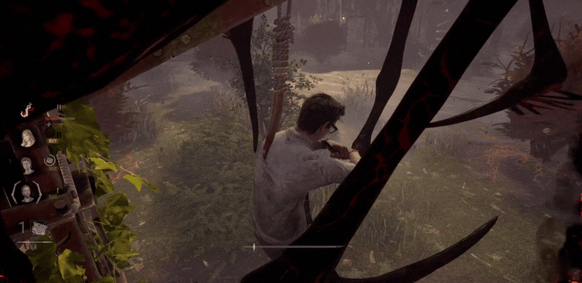
Camping means remaining staying relatively close to a Hooked Survivor.
This may discourage the other Survivors from rescuing their Hooked teammate, but staying near the Hook for too long can
leave Generators unprotected.
Anti-Camp: Do not remain too close to the Hooked Survivor, or else the in-game mechanic known as Anti-Camp will kick in. If you stand directly by the Hooked Survivor, they will be able to Unhook themselves if their Anti-Camp Meter reaches maximum capacity. However,
The Anti-Camp feature no longer applies when other Survivors are near the Hooked Survivor, or if all five Generators have been fully repaired. Be mindful: you, the Killer, cannot see the Anti-Camp Meter!
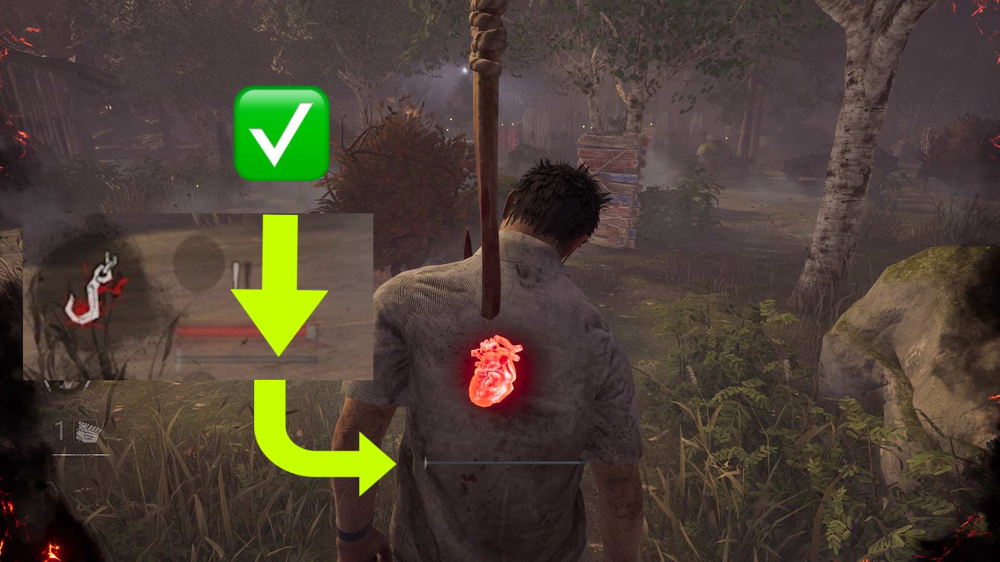
Anti-Camp Meter at zero
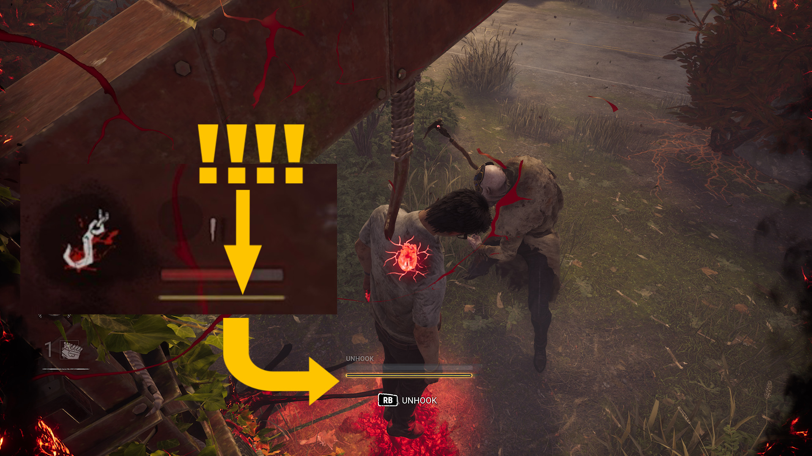
Anti-Camp Meter at max
If abandoned by their teammates, or Hooked a third time, the Survivor succumbs to their death timer and dies. The Hook the Survivor died on is temporarily broken and will automatically reappear after 60 seconds.
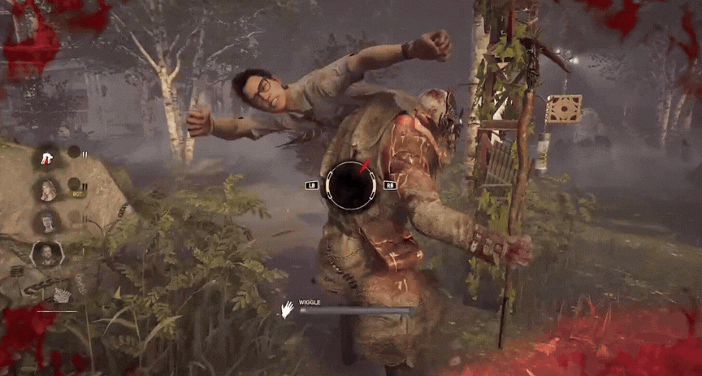
Common Killer Strategies
Slugging means leaving a downed Survivor on the ground
instead of immediately picking them up. This may be useful when another
Survivor is nearby to assist their teammate, but leaving a Survivor down for too long can give the
other Survivors time to repair Generators. Slugging is powerful, but only when done properly. Picking up a downed Survivor creates a lot of down time because you, the Killer, need to find and Hook the Survivor, so keeping them on the ground to cause more pressure to the other Survivors can greatly benefit the Killer. However, Slug only when you believe the pros outweigh the cons; excessive or unnecessary Slugging can lose you the game, so only do it strategically.
Tunneling is short for tunnel-vision. Tunneling means repeatedly targeting the same Survivor after they have been rescued from a Hook. Eliminating one
Survivor early can be powerful, but chasing the same Survivor for too long
may allow the other Survivors to complete their objective. Tunneling is extremely powerful, sometimes even mandatory to create pressure when the Survivors repair the Generators too quickly, but do not be afraid to stop the Tunnel if you believe it is impossible to commit to.
Proxy Camping refers to monitoring Hooked Survivors while staying far away enough from the Hook so as to not trigger the Anti-Camp mechanic. Proxy Camping is incredibly effective at securing either a Second Hook State or a kill. If you have reason to believe a Survivor is nearby to rescue their Hooked teammate, or if you don't know where any Survivor is, Proxy Camping the Hook may be your best bet.
Basement Hooks are especially precarious for Survivors, as there is only one way in and out of the Basement. Should you down a Survivor near the Basement stairwell, consider Hooking them there instead, for you might catch other Survivors going for the rescue on the way down.
Survivors
"Probably stings like hell, but it ain't gonna kill ya. Up and at 'em soldier."
Survivor Objective
Each Trial begins with four Survivors against one Killer. There are seven Generators scattered around the map,
and the Survivors must repair five of them to restore power to the Exit Gates. Once the Exit Gates are powered, Survivors can open them and escape the Trial.
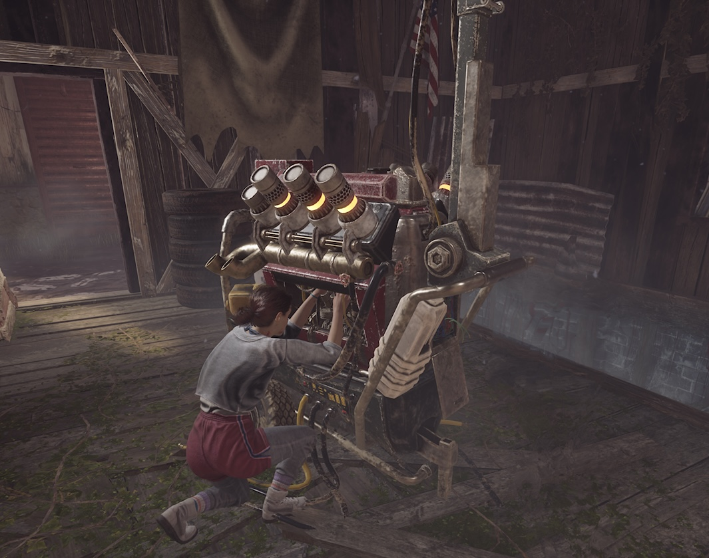
Survivors must work together while avoiding the Killer. Repairing Generators is the main objective, but Healing Injured teammates,
rescuing Hooked Survivors, and distracting the Killer are essential as well.
Repairing Generators
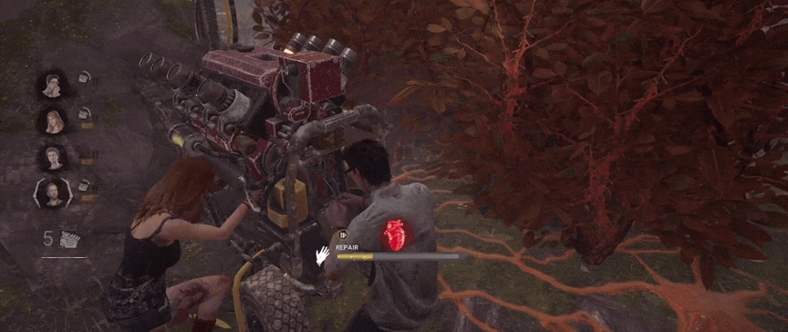
Generators are the Survivors' main objective. Approach an unfinished Generator and hold the repair button to begin working on it. A Generator requires 90 seconds for one Survivor to complete. Multiple Survivors are able to work together on a single Generator at the same time; the more Survivors work on a Generator, the faster the Generator gets repaired.
While repairing, Survivors will be given prompts known as Skill-Checks. Survivors must stop a spinning red tally mark within a highlighted success zone at the right moment. Successfully completing the Skill-Check allows the repair to continue; failing it causes the Generator to lose 10% of its progress. Skill-Checks could appear at any time, so remain vigilant!
You will know the Skill-Check is coming when you hear a loud "PING" sound.
A Good Skill-Check is achieved by landing the red tally mark within the highlighted success zone. It allows the repair to continue without penalty.
A Great Skill-Check is achieved by landing the red tally mark within the very small white box inside the highlighted success zone.
In addition to avoiding blowing up the Generator, Great Skill-Checks grant bonus progress toward the Generator's repair meter.
Failed Skill-Check: The Generator explodes, loses 10% of its progress, and notifies the Killer that the Generator exploded.
When a Killer damages a Generator, it begins sparking and slowly loses repair progress over time. To stop the regression,
a Survivor must return and resume repairing the Generator. A sparking Generator left unchecked will slowly regress until it reaches zero.
If the Generator is sparking, the repair bar will also have a sparking indicator line.
If you want to stop the Generator from regressing, repair the Generator past the sparking indicator line.
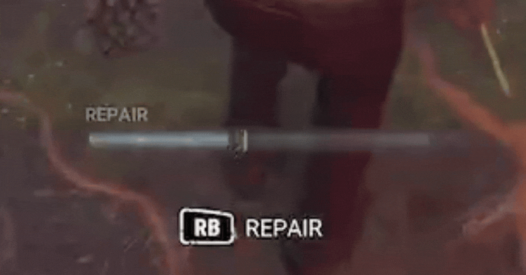
Avoiding the Killer
The Terror Radius refers to how close the Killer is to the Survivor(s). Each Killer has a unique Terror Radius soundtrack,
and the closer they get, the louder the Survivor's heartbeat and the soundtrack become.
When there is no Terror Radius and heartbeat, the Killer is far away.
Note: Some Killers, such as The Ghostface and The Wraith, are Stealth Killers. Stealth Killers have powers that allow them to hide their Terror Radius,
so you will need to use your eyes to spot them, rather than relying on the Terror Radius.
Killers also have a red light known as the Red Stain in front of them.
The Red Stain can help you understand which direction the Killer is looking at. Survivors play in third person while the Killer plays in first person, so take advantage of their lack of vision wisely.
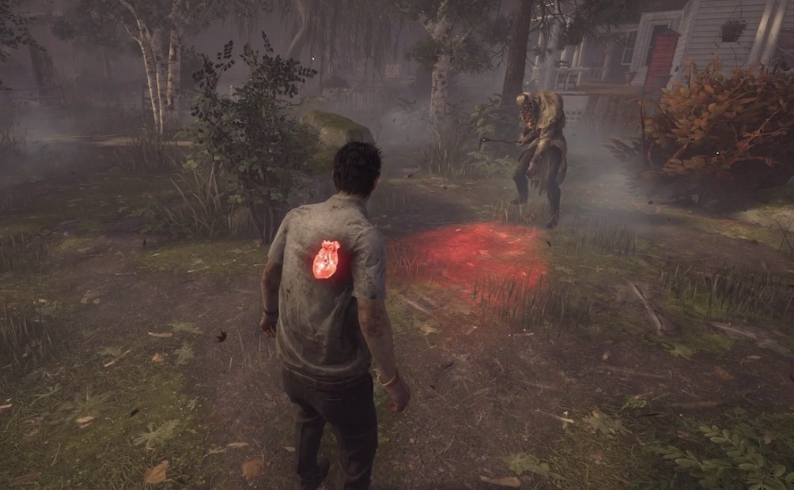
Running allows you to move quickly, but it leaves red Scratch Marks that the Killer can follow. Survivors can not see Scratch Marks. Walking and Crouching do not create Scratch Marks, making them useful when attempting to hide.
RunningWalkingCrouching
Be aware of Crows resting around the map. Moving near a Crow causes it to fly away, which may reveal your location to an observant Killer.
Health States
A Healthy Survivor who is hit by the Killer becomes Injured. An Injured Survivor who is hit again is Downed.
Healthy: The Survivor has not been injured.
Injured: The Survivor leaves Pools of Blood and makes Grunts of Pain.
Downed: The Survivor falls to the ground and can be picked up by the Killer.
Hooked: The Downed Survivor has been carried to a Hook and must wait for rescue from their team.
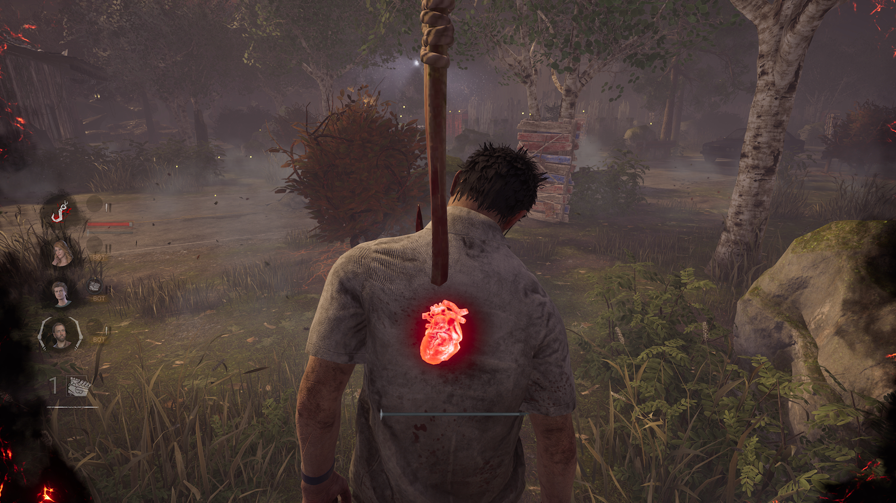
An Injured Survivor can be Healed by up to two other Survivors back to Healthy. Healing, just like Generator repairs, includes Skill-Checks, and failing one alerts the Killer to the Heal's location.
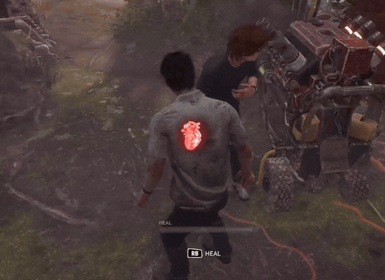
HealingMissing a Skill-Check notifies the Killer
A Downed Survivor has a recovery bar, and if the Downed Survivor doesn't move, they can charge up to a cap of 95% of their recovery bar. However,
the Downed Survivor requires assistance from their teammates to recover that remaining 5% to get back up to the Injured State.
A Downed Survivor has a Bleed-Out timer of 240 seconds. If left Downed, the Survivor will eventually bleed out and die if the 240 second timer is reached. The Downed Survivor is able to crawl, but cannot recover while crawling.
Pallets and Windows
Pallets and Windows are important resources that help Survivors avoid the Killer and extend chases.
Pallets are wooden objects located around the map. Survivors can drop a Pallet to block the Killer's path.
If the Pallet is dropped directly onto the Killer, the Killer is temporarily stunned.
A dropped Pallet can also be vaulted by Survivors. However, the Killer may break the Pallet, permanently removing it from the Trial.
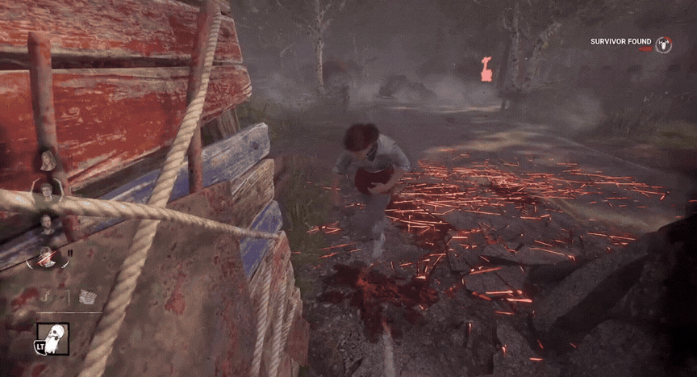
Pallet-Stunning the KillerKillers can break dropped Pallets
Windows allow Survivors to quickly move through buildings and obstacles. Unlike Pallets, Windows are directly a part of the map and cannot be broken by the Killer.
Slow Vault: A Slow Vault is performed by vaulting without using the sprint button.
It is the slowest type of vault, but it is completely silent.
Because it does not generate a Loud Noise Notification, the Killer is not alerted to your location,
making it useful for remaining hidden and avoiding detection.
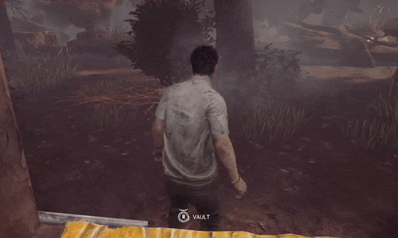
Medium Vault: A Medium Vault is performed by sprinting toward a window without
approaching it in a straight line. It is faster than a Slow Vault but slower than a Fast Vault,
and it generates a Loud Noise Notification, revealing your location to the Killer.
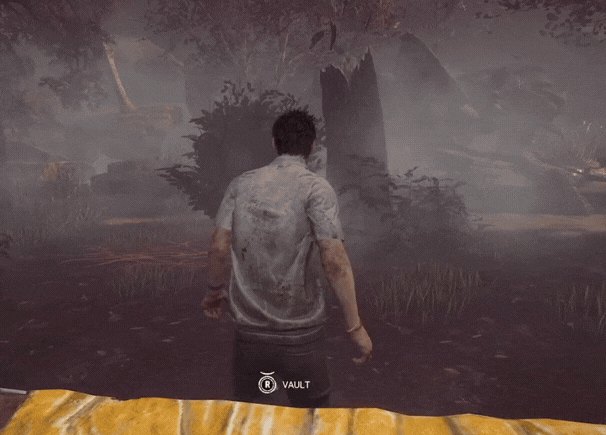
Fast Vault: A Fast Vault is performed by sprinting directly toward a window
in a straight line. It is the quickest type of vault, allowing Survivors to create the greatest
distance from the Killer during a chase. Like a Medium Vault, it generates a Loud Noise Notification,
alerting the Killer to your location.
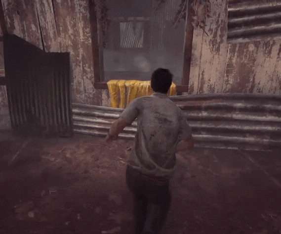
Repeatedly vaulting the same Window three times during a chase causes the Window to become temporarily blocked for 30 seconds.
Lockers and Hiding
Survivors can enter Lockers to hide from the Killer, but they do not guarantee safety.
Entering or leaving a Locker quickly creates a Loud Noise Notification that alerts the Killer. Entering slowly is quieter but takes more time.
If the Killer opens a Locker while a Survivor is hiding inside, the Survivor is immediately grabbed and thrown onto the Killer's shoulder.
Killers might also check Lockers if they hear breathing or Grunts of Pain.
Rescuing Hooked Survivors
When a teammate is Hooked, the other Survivors must decide when it is safe to rescue them. Do not immediately rush toward the Hook without checking whether the Killer is nearby.
In addition to the Hooks scattered around the map, there is a special location which spawns in every single Trial known as the Basement. The Basement has only one combined entrance and exit, which is a staircase leading underground where four indestructible Hooks can be found. If a Survivor dies on a Hook in the Basement, the Hook will remain as is, unlike other Hooks which are temporarily unavailable after a Survivor dies.
The Stairwell leading to the BasementThe Basement Hooks
First Hook State: The Survivor hangs on the Hook and waits for a teammate
to rescue them (70 seconds). If the other Survivors fail to rescue them before the 70 second timer elapses, they enter into the Second Hook State.
Second Hook State: If either left on Hook past the 70 seconds of the First Hook State, or if Hooked again, the Survivor must complete Skill
Checks while requiring a teammate to rescue them (70 seconds). Should the Hooked Survivor miss a Skill-Check, they lose precious seconds from their 70 second timer.
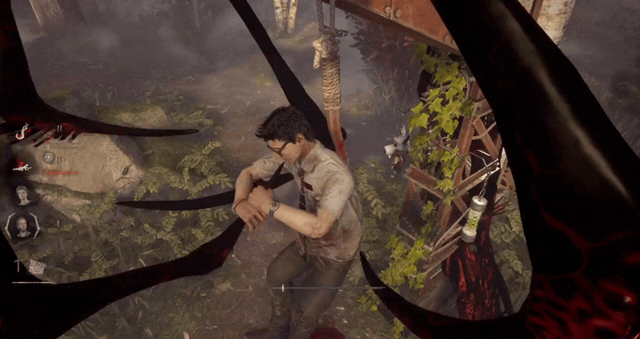
Should the Killer stray too close to a Hooked Survivor too long, the Anti-Camp Mechanic kicks in. The longer the Killer stays nearby, the more the yellow bar goes up. When the Anti-Camp Meter reaches maximum capacity, the Hooked Survivor can Unhook themselves without the help of their teammates. The Anti-Camp Mechanic can activate during both the First Hook State and Second Hook State, deactivating after the fifth generator is fully repaired. All Survivors can see the Anti-Camp Meter, but the Killer cannot.
Empty Anti-Camp MeterFull Anti-Camp Meter
After being rescued, Unhooked Survivors gain a 15 second shield from the Killer's attacks. Should the Killer attack Survivors with this protection (formally known as "Endurance"), the Survivor will enter Deep Wound instead of going Down.
If abandoned by their teammates, or Hooked a third time, the Survivor succumbs to their death timer and dies. The Hook the Survivor died on is temporarily broken and will automatically reappear after 60 seconds.
Deep Wound
Deep Wound is a special injury caused by certain Killers, attacks, and abilities. When inflicted, a yellow bar appears. This bar has a timer,
and the timer will not drain if you run. However, should the Survivor stand still, walk, crouch, repair Generators, Heal, or open an Exit Gate, the timer will quickly drain.
If the timer runs out, the Survivor will be Downed, even if the Killer is far away.
To avoid going down, you must Mend yourself or have another Survivor Mend you before the timer runs out.
Mending is a different action from Healing.
Survivor Items
While Killers have individual Powers alongside their weapon, Survivors have no such thing. To compensate, they may bring an Item into the Trial.
Items have a depletion bar; the more the item is used, the more the depletion bar will go down. Items can be fully depleted.
Med-Kits: Help Survivors Heal themselves, or Heal their teammates faster.
Toolboxes: Assist with Generator repairs or Hook sabotage.
Flashlights: Blind the Killer and may force them to drop a carried Survivor.
Maps: Track important objects found throughout the Trial, such as Generators.
Keys: Immediately open chests or reopen a closed Hatch.
Fog Vials: Create a large smokescreen to conceal Survivors inside its radius.
Each Item can have up to two attachable power-ups known as Add-Ons. Add-Ons improve the Item's strength, versatility, and durability in various ways.
Opening the Exit Gates
Once five Generators have been completed, the two Exit Gate switches become powered. Survivors must hold the interaction button at a switch until the gate is ready to open, which takes a total of 16 seconds per switch.
Opening an Exit Gate begins the Endgame Collapse. A timer appears at the top of the screen, and any Survivor who remains inside the Trial when the timer expires is killed.
The Hatch
When only one Survivor remains in the Trial, the Hatch appears as an additional escape option. The Survivor can escape immediately by entering the open Hatch.
The Killer can close the Hatch after finding it. Closing it powers the Exit Gates and begins the Endgame Collapse, giving the final Survivor one last chance to escape.
Common Survivor Strategies
Stealth means avoiding detection by walking, crouching, hiding behind objects, and carefully managing your Scratch Marks. Stealth can be useful, but hiding for too long may leave your teammates without help. Use your time wisely!
Repairing Generators with other Survivors can help reduce the repair time, but the entire team concentrating on a single Generator is generally inefficient. Individually spreading out across the map and finding unattended Generators is often more effective.
At the start of the Trial, one or two Survivors should work on the closest Generator, while the other two search for and begin repairing others. This way, if the Killer shows up and interrupts the repair, other members of the Survivor team can still be tinkering away at the main objective.
Body Blocking means standing in the Killer's path to protect another Survivor. An uninjured Survivor may take a hit to help an injured teammate reach safety. If a teammate is under attack and on their Second Hook State and you haven't been Hooked once, it might be best to find and protect them.
Generator Pressure means spreading out and continuously repairing Generators. Survivors who remain productive force the Killer to divide their attention across the map.
Saving means using a Flashlight or Pallet to force the Killer to release a carried Survivor. These saves require careful timing and may be dangerous to attempt. If you're unsure whether you can make the Save, it's best to stay away and focus on another task. Giving the Killer an unnecessary Injury or Down is the least you and your teammates need.
Unhooked Survivors should distance themselves from the Killer while another teammate attempts to distract or provide protection. Don't let the Killer Tunnel you out for free!
Hook Trades occur when one Survivor rescues another from a Hook, but is downed and Hooked in their place right after. A Hook Trade may be worthwhile if another Survivor's death timer is nearing the 70 second threshold. Don't let your teammates die or hit their Second Hook State. Pay attention to their Hook Timer!
Healing is crucial, but it isn't always necessary to Heal right away. Sometimes completing an important Generator or rescuing a Hooked teammate takes higher priority.
Anti-Camp is an obscenely powerful tool, but be careful: should the Hooked Survivor's teammates rally around the Hook, the Anti-Camp Meter will not go up. Pay close attention to the HUD at the far left of the screen. If you see your teammate's yellow bar increasing rapidly, it's better to repair a Generator or find another task, as the Killer might very well let your teammate Unhook themselves without your help. If not, best hurry to their rescue.
Perks that cause "Exhaustion" should not be stacked. Don't use more than one Exhaustion perk at a time, as their requirements might overlap. Pick another perk instead! (More information on perks in the Recommendations section.)
Recommendations
"Pick your poison, bestie. Buckle up."
Currency
Dead by Daylight has three currencies: Bloodpoints, Iridescent Shards, and Auric Cells.
BloodpointsIridescent ShardsAuric Cells
Bloodpoints can be obtained during Trials, completing quests, and the Rift (battle pass). Bloodpoints are used in the
Bloodweb to level up both Survivors and Killers.
Iridescent Shards are obtained by leveling up your player level and completing quests. Iridescent Shards are used to buy non-licensed characters and non-licensed cosmetics for those characters.
Auric Cells must be obtained by paying with real money. Auric Cells are used to buy licensed characters and licensed cosmetics,
but can also be used to buy non-licensed characters and non-licensed cosmetics as well.
Bloodweb and Loadout
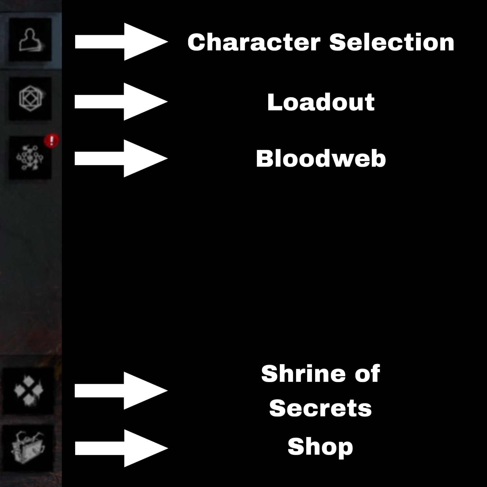
Tab NamesBloodweb
Players can use Bloodpoints in the Bloodweb to unlock Items, Add-Ons, Offerings, and Perks for their Survivors and Killers.
The Bloodweb is Dead by Daylight's progression system where players spend Bloodpoints to level up characters. Clicking on the nodes in the Bloodweb spends Bloodpoints. Click all possible nodes to progress to the next level.
As a character levels up, their Bloodweb will unlock stronger rewards.
The rewards in the Bloodweb consist of:
Perks: Special abilities that provide advantages during Trials.
Items: Equipment Survivors can bring into Trials.
Add-Ons: Attachables that improve Survivor Items or Killer Powers.
Offerings: Consumables that provide effects during a Trial. Used automatically before loading into a Trial.
After a character passes Level 50 in the Bloodweb, the character reaches Prestige One. Prestiging a Survivor means their three unique perks are now available to all selectable Survivors. The same ruling applies for Killer. After a Survivor or Killer is Prestiged, their Bloodweb level returns to one. All unlocked Perks, Items, Add-Ons, and Offerings remain the same after a Prestige, so do not worry about losing anything.
Characters can be Prestiged 100 times, and then their Bloodweb will stay at Prestige 100 endlessly. All characters can be Prestiged.
The Loadout menu is where players choose what they bring into a Trial. Loadouts allow players to equip Perks, Items, Add-Ons, and Offerings before entering a match. Each Survivor and Killer can equip up to four perks at a time. To equip a perk:
Open the Loadout menu.
Select one of the four perk slots.
Choose a perk you have unlocked.
The more a character levels up in the Bloodweb, the more Perks, Add-Ons, and Offerings become available to use in the Loadout. Only Survivors can use Items, as the Killer's item is their specific Killer Power. Instead of using Add-Ons to strengthen an Item, Killers may use Add-Ons to strengthen their Killer Power. Both Survivors and Killers can bring Offerings into a Trial.
Beginner Killers
These Killers have Powers that are easy to learn while still teaching important Killer mechanics.
1.
The Wraith: The most beginner-friendly Killer. The Wraith can cloak himself to become nearly invisible and move much faster around the map.
His ability makes it easier to patrol Generators, surprise Survivors, and learn how to track opponents during a match. The Wraith is free and comes with the game.
2.
The Legion: The Legion excels at quickly injuring multiple Survivors with their power. The Legion helps beginners learn map pressure,
tracking, and keeping several Survivors injured at once. The Legion can be purchased for 4,500 Iridescent Shards or for 250 Auric Cells.
3.
The Clown: The Clown can throw tonics that slow Survivors or hasten himself, making chases much easier.
He teaches new players how to shut down chases more consistently. The Clown can be purchased for 2,250 Iridescent Shards or for 125 Auric Cells.
Unique Killer Perks
Each Killer comes with three unique perks that can be unlocked. These unique perks can also be used by other Killers after the Killer has reached Prestige One.
#1 - The Wraith
Bloodhound
Priority:
LOW
The Pools of Blood left behind by Injured Survivors glow a brighter red and linger on the ground longer.
Predator
Priority:
MEDIUM
When a Survivor escapes chase, their location is revealed to the Killer for four seconds. Predator has a 40-second cooldown.
Shadowborn
Priority:
LOW
When Blinded by a Survivor's Flashlight, gain a burst of speed for 10 seconds.
#2 - The Legion
Discordance
Priority:
HIGH
When a Generator is being repaired by two or more Survivors, the Generator is illuminated and the Killer receives a Loud Noise Notification.
Iron Maiden
Priority:
LOW
The Killer opens Lockers faster. When a Survivor exits a Locker, they scream, cause a Loud Noise Notification, and can be Downed even if Healthy for 30 seconds.
Mad Grit
Priority:
LOW
When carrying a Survivor to a Hook, the Killer has zero cooldown for slashing their weapon. If another Survivor is Injured or Downed while a Survivor is on your shoulder, the Carried Survivor's Wiggle bar pauses for four seconds.
#3 - The Clown
Coulrophobia
Priority:
MEDIUM
When a Survivor is in the Killer's Terror Radius, their Healing speed is reduced by 50% and receive faster Skill-Checks in high frequency.
Pop Goes the Weasel
Priority:
HIGH
After Hooking a Survivor, the next time you damage a Generator, it explodes and loses 15% progress. Pop Goes the Weasel is active for 45 seconds.
Bamboozle
Priority:
HIGH
The Killer Vaults Windows 15% faster. Additionally, the most recent Window Vaulted by the Killer is automatically blocked for all Survivors for 16 seconds. Vaulting the same Window resets the timer.
General Killer Perks
Unlike unique Killer perks, general Killer perks don't need to be unlocked by Prestiging a Killer. Instead, they are available to every Killer and can appear randomly in the Bloodweb. Be sure to look out for these three particularly helpful perks.
No Holds Barred
Each time a Generator is completed, the Generator with the most amount of repair progress is blocked for 25 seconds.
Unrelenting
Reduces the cooldown of missed attacks with your weapon by 30%.
Sloppy Butcher
Injured Survivors take longer to Heal and leave larger Pools of Blood more frequently. If the Heal is interrupted while Sloppy Butcher is active, the Survivor's Healing progress bar rapidly goes down.
Beginner Survivors
All Survivors share the same basic functions. Choosing a Survivor often comes down to their appearance, cosmetic options, and personal preference.
1.
Meg Thomas: The most beginner-friendly Survivor. Meg Thomas has a slim build and several dark cosmetic outfits that
can be unlocked with Iridescent Shards, helping her hide better from the Killer. Meg Thomas is free and comes with the game.
2.
Feng Min: Feng Min is the shortest Survivor in the game, which can make her a little harder for Killers to keep track of during Trials.
She also has many dark cosmetic outfits that can be purchased from the in-game Shop with Iridescent Shards. Feng Min can be purchased for 2,250 Iridescent Shards or for 125 Auric Cells.
3.
Kate Denson: Kate Denson is a great choice for players who enjoy versatility. She has many dark cosmetics that can help her stay less noticeable during a Trial, while also having countless colorful ones.
Kate Denson can be purchased for 2,250 Iridescent Shards or 125 Auric Cells.
Unique Survivor Perks
Each Survivor comes with three unique perks that can be unlocked. These unique perks can also be used by other Survivors after the Survivor has reached Prestige One.
#1 - Meg Thomas
Quick & Quiet
Priority:
LOW
When either rushing into a Locker, Medium or Fast Vaulting Pallets or Windows, the
Loud Noise Notification that would have alerted the Killer is silenced.
Quick & Quiet has a 15-second cooldown.
Sprint Burst
Priority:
HIGH
Gives the Survivor a burst of speed when running. Sprint Burst has a 40-second cooldown, measured by a heart on the right side of the screen.
Note:
Sprint Burst will not activate while this heart is on the right side of the screen (formally known as "Exhaustion.")
Adrenaline
Priority:
MEDIUM
Instantly Heals the Survivor by one Health State if Injured and grants a temporary burst of speed when the final Generator is completed.
#2 - Feng Min
Technician
Priority:
HIGH
If a Survivor misses a Skill-Check while repairing a Generator, the Killer does
not receive a Loud Noise Notification unless they are very close to the Generator.
Additionally, the missed Skill-Check that would normally cause the Generator to lose 10% of its progress loses significantly less.
Lithe
Priority:
HIGH
Gives the Survivor a burst of speed after either Medium or Fast Vaulting
a Window or dropped Pallet. Lithe has a 40-second cooldown, measured by a heart on the right side of the screen.
Note:
Lithe will not activate while this heart is on the right side of the screen
(formally known as "Exhaustion.")
Alert
Priority:
MEDIUM
The Survivor sees the Killer's location for five seconds when the Killer
breaks a Pallet or damages a Generator.
#3 - Kate Denson
Windows of Opportunity
Priority:
HIGH
The locations of all nearby Windows and Pallets are shown to the Survivor.
Dance With Me
Priority:
LOW
After the Survivor rushes out of a Locker, performs a
Medium Vault, or performs a Fast Vault through a Window or dropped Pallet,
the Survivor's Scratch Marks are hidden for five seconds.
Boil Over
Priority:
LOW
Every time the Killer drops from a higher elevation while the Survivor is being
carried on their shoulder, the Survivor's Wiggle bar gains a 33% boost.
General Survivor Perks
Unlike unique Survivor perks, general Survivor perks don't need to be unlocked by Prestiging a Survivor. Instead, they are available to every Survivor and can appear randomly in the Bloodweb. Be sure to look out for these three particularly helpful perks.
Deja Vu
Reveals three Generators that are close together throughout the entire Trial. The Survivor repairs the illuminated Generators six percent faster.
Kindred
When another Survivor is Hooked, you see the location of all your teammates.
When you are Hooked, your teammates can see each other. Should the Killer get too close
to a Hooked Survivor, their location is revealed to all Survivors until they leave the vicinity.
We'll Make It
After Unhooking another Survivor, you gain 100% faster Healing speed when Healing your teammates for 90 seconds.
Similar Sites
Still interested in some more Dead by Daylight? Here are three fantastic resources!
The first is Otzdarva.com, the website which inspired this project.
The site contains guides, recommendations, tier lists, and other resources for players.
The next is NightLight.gg. This site is better suited for
intermediate and advanced players, with a focus on player statistics, such as which Killer is the deadliest,
which Survivor is played the most, what Survivor perks have the highest win rate, etc.
The website is extremely helpful for analyzing gameplay and what loadouts to run, but beginners can feel free and take a look around.
The last is DeadByDaylight.wiki.gg, a community wiki approved by Dead by Daylight's
developer, Behavior Interactive.
The wiki contains information about nearly every aspect of the game, from maps to characters, mechanics, and so much more.
hi, i'm hadolye!
I'm an avid Dead by Daylight player with well over 2,000 hours and counting, and I could likely tell you the strangest, most bizarre detail about this game imaginable because of
how much I play it. I didn't start out like this, though. I booted up the game back in August 2021 because one of my friends told me to, and I was horrible.
What mattered, in the end, was that we had fun, and I had a lot of it. But, as a naturally competitive person playing
a competitive multiplayer game, I wanted to get better.
The problem was I didn't have anyone to help me, as my friends were more or less beginners themselves. I was on my own, and through trial and error, I made it to where I am now.
It only took about 100 hours to realize how the perk Adrenaline worked, and another 100 for Sprint Burst, and another 300 to finally gather the courage to play my first ever Killer game.
(Spoiler alert, I lost horribly.) The truth is this: Dead by Daylight is a hard game. It takes dozens upon dozens of hours to even understand
how things work because of all the micromanaging and whatever else.
That's why I created this website. To make learning Dead by Daylight a little easier for new players. Instead of searching through dozens of videos and guides like I did,
you can find the basics all in one place. Whether you're about to play your very first Trial or just looking to improve, I hope this guide helps you feel more confident.
Remember: every experienced player was once a beginner, and everyone starts somewhere.
hadolye's favorites
Survivors: Meg Thomas and Trevor Belmont
Killers: The Dark Lord and The Pig
Map: Raccoon City Police Station West Wing and Azarov's Resting Place
Survivor Perks: Bond, Desperate Measures, Dead Hard, Made for This
Killer Perks: Spies from the Shadows, Turn Back the Clock, Secret Project, Dead Man's Switch
Dead by Daylight and its related names, characters, and images
belong to Behaviour Interactive and their respective owners.